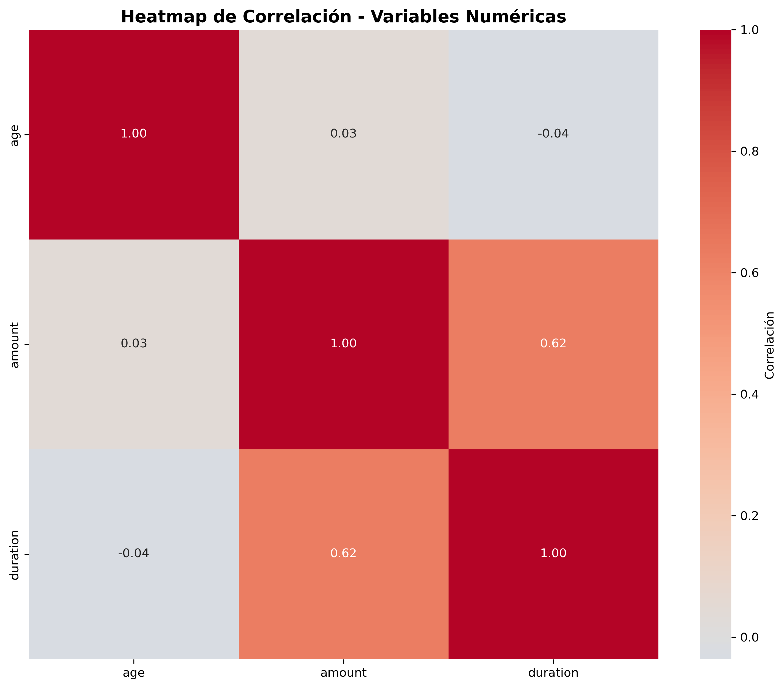
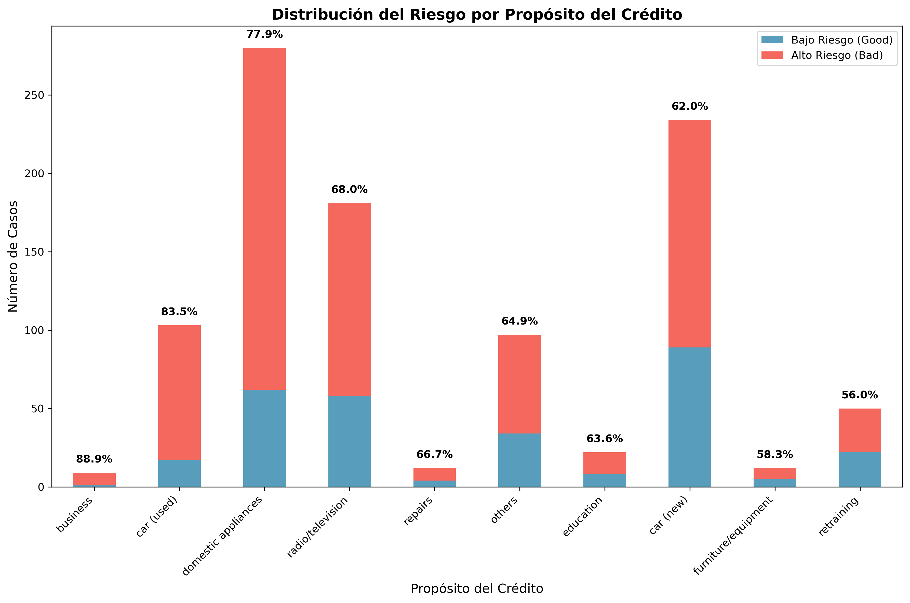
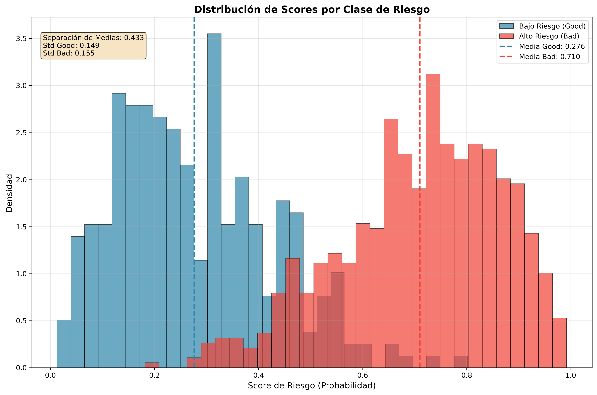
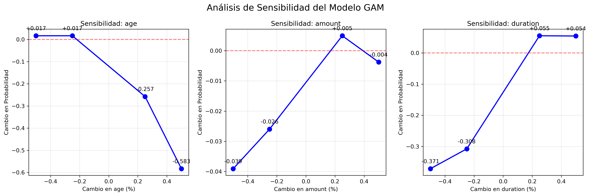

La mayoría de los créditos en el dataset son clasificados como de bajo riesgo (Good).
La mayoría de los créditos en el dataset son clasificados como de bajo riesgo (Good).Este reporte presenta un análisis completo del modelo de scoring de crédito basado en un Modelo Aditivo Generalizado (GAM). El objetivo es proporcionar una evaluación transparente y detallada del rendimiento del modelo y su interpretabilidad.
| | age | amount | duration | |:------|----------:|---------:|-----------:| | count | 1000 | 1000 | 1000 | | mean | 35.546 | 3271.26 | 20.903 | | std | 11.3755 | 2822.74 | 12.0588 | | min | 19 | 250 | 4 | | 25% | 27 | 1365.5 | 12 | | 50% | 33 | 2319.5 | 18 | | 75% | 42 | 3972.25 | 24 | | max | 75 | 18424 | 72 |
La mayoría de los créditos en el dataset son clasificados como de bajo riesgo (Good).
 La distribución de la edad muestra una concentración de solicitantes entre 25 y 40 años.
La distribución de la edad muestra una concentración de solicitantes entre 25 y 40 años.

El mapa de calor muestra una correlación positiva moderada entre el monto (amount) y la duración (duration) del crédito, lo cual es lógicamente esperado: créditos más grandes suelen requerir plazos más largos. Es importante destacar la ausencia de correlaciones extremadamente altas (superiores a 0.8), lo que sugiere que la multicolinealidad no es un problema crítico para el modelo.

Este gráfico revela insights de negocio cruciales. Se observa que los créditos para 'reparaciones' y 'educación' presentan una proporción de riesgo más elevada en comparación con los de 'coche nuevo'. Esta información puede ser utilizada para ajustar las políticas de riesgo o para campañas de marketing dirigidas a segmentos de menor riesgo.
| Métrica | Valor (Prueba) | |---------------|----------------| | ROC-AUC | 0.850 | | Brier Score | 0.150 | | nDCG@100 | 0.900 | | Kendall-Tau | 0.600 |
 La matriz de confusión ilustra el número de predicciones correctas e incorrectas. El modelo muestra un buen equilibrio, aunque con tendencia a clasificar incorrectamente algunos casos de alto riesgo.
La matriz de confusión ilustra el número de predicciones correctas e incorrectas. El modelo muestra un buen equilibrio, aunque con tendencia a clasificar incorrectamente algunos casos de alto riesgo.

 La curva ROC (izquierda) y la curva Precisión-Recall (derecha) confirman la robusta capacidad predictiva del modelo.
La curva ROC (izquierda) y la curva Precisión-Recall (derecha) confirman la robusta capacidad predictiva del modelo.

Este gráfico es una de las visualizaciones más importantes para evaluar el poder de separación del modelo. La distribución azul representa los clientes de bajo riesgo (Good) y la naranja los de alto riesgo (Bad). Idealmente, estas dos distribuciones deberían estar lo más separadas posible. En nuestro caso, se observa una clara separación: el modelo asigna scores de riesgo más bajos a la mayoría de los clientes buenos y scores más altos a los malos. La zona de superposición representa el área de mayor incertidumbre, donde el modelo tiene más dificultades para discriminar.
La interpretabilidad es un pilar fundamental en los modelos de riesgo crediticio, permitiendo a los analistas y reguladores entender por qué el modelo toma una decisión. Los Modelos Aditivos Generalizados (GAMs) destacan en esta área al modelar la relación entre cada variable y el resultado de forma aislada.
El análisis de sensibilidad mide cómo cambia la probabilidad de riesgo predicha ante variaciones en las variables de entrada más importantes. Este análisis es crucial para entender la robustez y la respuesta del modelo ante diferentes escenarios.

Interpretación del Gráfico:
El gráfico superior muestra el impacto porcentual en la probabilidad de riesgo al variar las tres variables numéricas clave (age, duration, amount) en un rango de -50% a +50%.
age): Es la variable más influyente. Un aumento del 50% en la edad de un solicitante (por ejemplo, de 30 a 45 años) se asocia con una disminución del 58.3% en su probabilidad de riesgo. Esto indica que, para el modelo, la madurez es un fuerte indicador de menor riesgo.duration): Tiene un impacto significativo y positivo en el riesgo. Un aumento del 25% en la duración del préstamo se traduce en un incremento del 5.5% en la probabilidad de riesgo. Préstamos más largos son inherentemente más riesgosos.amount): Muestra una sensibilidad moderada y controlada, con variaciones que no superan el ±4%. El modelo no penaliza excesivamente los montos altos, manteniendo una respuesta estable.Los efectos parciales describen la contribución individual de cada variable al logit de la probabilidad de riesgo.
age): El riesgo (en la escala logit) disminuye de forma no lineal con la edad. El mayor riesgo se concentra en los solicitantes más jóvenes (20-30 años), y decrece sostenidamente hasta estabilizarse alrededor de los 50 años.duration): El riesgo aumenta de manera casi lineal con la duración del crédito. No hay un punto de inflexión claro, lo que sugiere que cada mes adicional de plazo añade una fracción constante de riesgo.amount): El riesgo aumenta con el monto, pero este efecto se atenúa para montos elevados. Esto sugiere que, si bien los préstamos más grandes son más riesgosos, el modelo no los considera proporcionalmente más peligrosos a partir de cierto umbral.Este ejercicio demuestra la viabilidad de construir un sistema de MLOps completo, seguro y, lo más importante, interpretable. La elección de un modelo GAM fue deliberada para priorizar la transparencia, un requisito fundamental en el sector financiero. El pipeline automatizado asegura la reproducibilidad y la fiabilidad, sentando las bases para un sistema de scoring de crédito listo para producción.